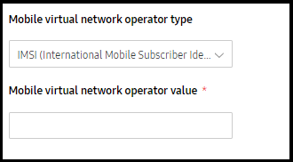
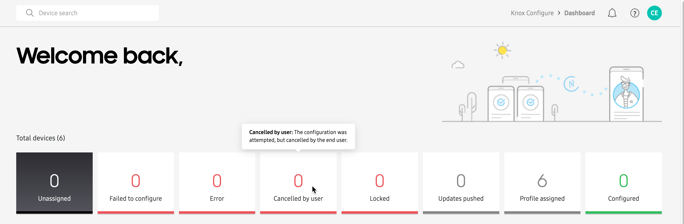

Knox Configure 1.25 release notes
Last updated July 26th, 2023
Support for non-Knox Samsung devices
With this release, separate profiles are now configurable for Samsung devices without Knox Platform for Enterprise. Going forward, an admin will have the option of configuring a profile Secured by Knox or Other Samsung devices.
When configuring a profile, an admin is not required to select a Knox version. The remainder of the profile configuration closely resembles the existing process and screen flow.
However, the following profile restriction options and payloads are disabled:
- Auto power on
- Disable Camera
- Disable USB classes
- APN setting
- Disable OMC mode
- SIM lock PIN
- Kiosk mode and device lock
- WiFi APN provisioning
These profiles are only assignable to Other Samsung devices. When IMEIs are uploaded into the KC console, Knox supported devices will not be accepted into these profiles. When an upload fails, an appropriate message displays for either individual or bulk upload failures. The KDA enrollment of Other Samsung devices is not supported for either Knox Configure or Knox Mobile Enrollment.
Advanced features
Beginning with this release, Knox Configure will begin providing enterprise IT administrators a schema-driven user interface, allowing admins to remotely configure, change and manage device settings. These settings are unique to Samsung device models, and are not provided by Android Enterprise.
With this KCS 1.25 release, only an Advanced features section will be added from the Deep Settings schema introduced with Knox 3.4. There will be no impact to existing profile configuration categories with this addition.
The following Advanced features are introduced with this release:
- Smart stay - When enabled, the screen remains unlocked as long as the device camera can detect your eyes looking at the screen. When you put the phone down or look away, the device will turn off based on the screen’s current timeout settings.
- Smart alert - When enabled, smart alert informs the device user of missed calls and text messages by vibrating the phone when its picked up.
- Easy mute - When enabled, easy mute allows you to mute incoming calls and alarms by placing your hand on the screen. On Galaxy S8, S8+, S7 and S7 edge platforms you can also mute calls and alarms by placing the phone face down on a flat surface.
- Palm swipe to capture - When enabled, this feature allows you swipe your hand across the device screen to capture the current device display. Once captured, the image resides in the screenshots album/folder in the gallery.
- Swipe to call or send messages - When enabled, this feature allows you to call or send messages by swiping your finger across a contact’s information in the phone or address book.
Web Kiosk mode
The Web kiosk solution addresses requests from Enterprises who want to improve the customer experience in their facility by presenting product descriptions, comparisons and demonstrations. Such Enterprises want to leverage tablets to better message their key services through the improved customization of their Kiosk services.
In particular, an a dmin can configure WebKiosk mode supported profile to support the following features:
- A single home screen with custom wallpape
- Home screen bookmarks with custom icons
- When WebKiosk mode is enabled, the following browser customizations are applied:
- Customer webpage bookmarks with unique customizable icons
- Disable tab view functionality
- The ability to clear the browser cache and cookies
- Address bar removal
MVNO details added within APN settings
Starting with the P OS (Android 9.0), some APNs now require the mobile virtual network operator type (mvno_type) and mobile virtual network operator (MVNO) value (mvno_value) be set together. These mvno_type and mvno_value fields allow an APN configuration to be restricted when using particular MVNOs or subscriber accounts.
Without this setting, custom defined APN configurations are selected according to MCC and MNC only, which specifies the mobile network a mobile device subscribes to, but not the particular retailer or reseller, or account on a network.

To address this new requirement, Knox 3.2.1 and 3.3 devices can have their mvno type set to one of the following options during profile configuration:
- None
- SPN (Service Provider Name)
- IMSI (International Mobile Subscriber Identity)
- GID (Group Identifier Level 1)
Devices running Knox version 3.2.1 or 3.3 must be flashed for this feature to adequately function.
Shared device and E-billing deprecation
With this release, the Knox Configure client will ignore shared device and E-billing configurations on devices running the Android Q version operating system and above. The KC console provides a warning for now unsupported status of shared device and E-billing on the Q version operating system.
If the shared device feature was already enabled on an existing device, and that device was FOTA updated to the Q version operating system, the shared device feature should be disabled when a newly applied profile has shared device disabled.
WKC booting animation enhancements
Currently, booting animation, and sound are not cleared from a wearable device as expected when the Set a custom booting animation option is unselected, and an update is pushed to the device. Additionally, if the Set a custom shut down animation is unselected and an update is pushed to wearable device, shut down animation should also be cleared, including sound.
To date, WKC always checked if existing animation was set by a previous WKC profile, and would not remove it if set for a previous profile.
To remedy this situation, users can now remove booting or shutdown animation separately by ensuring either option is not selected when pushing an update.
WKC enrollment improvements
To date, when a wearable device has 15% power or less remaining and is in a Profile assigned state, enrollment is halted when authenticating after accepting the terms of the EULA. Once the wearable device is rebooted, the expected result is to resume enrollment. However, enrollment is not resumed after power save is enabled and then disabled before reaching an activating license state.
To remedy this enrollment problem, power saving is disabled, then enabled back after license activation so enrollment is not interrupted.
Auto select application upload improvements
To date, if you upload a new application into a profile, it is not selected automatically. You need to click the application icon again to ensure the expected check mark appears. This can be confusing, since the reason applications are typically uploaded is to deploy it immediately with an update.
To remedy this confusion, with this release a newly added, but not selected, application will be added as long as the application version is added as well.
Status bar tooltip enhancements in kiosk mode
In Kiosk mode, when customers select Hide Status Bar from the Home & Lock Screen they believe this action will hide the status bar, but it is still available when dragged down.
To remedy this confusion, the tooltip has been updated to the following, “This method shows or hides the status bar. If the status bar is hidden in normal mode, every application will use the entire display space for itself. Notifications will therefore be hidden from the user. The status bar will still be available if you drag it down. The Soft Navigation bar will be hidden from the user as well and available if you drag it up.
Dashboard widget enhancements
When there are no profiles in an account, the dashboard should show a Create profile button in place of the profile widgets.

Beginning with this release, when there are no profiles in an account, the dashboard displays a Create profile button instead of the profile widgets. Selecting it starts the profile creation screen flow. If there are profiles in the account, the button displays Select a profile to pin here. Selecting it displays a popup where the user can add profiles to the dashboard.
Add IMEI to lock screen email and send from KC settings
When an admin locks a delinquent user’s device, the user typically sends an email from the device’s Locked or Support screen in an attempt to unlock their device. Within the email page, the device identifier is the serial number. However, the IMEI has already been utilized to upload and enroll the device into Knox Configure. Additionally, the customer typically has no visibility of the serial number and are unable to identify the device. This has exposed the need for an easy to locate device IMEI to better assist locked device users.
To remedy this issue, a new IMEI field has been added to the existing serial number field, as long as the IMEI is available (the IMEI is not available on Wi-Fi only devices). Going forward, when a customer receives an email, they should have better access to the device IMEI.
On this page
Is this page helpful?